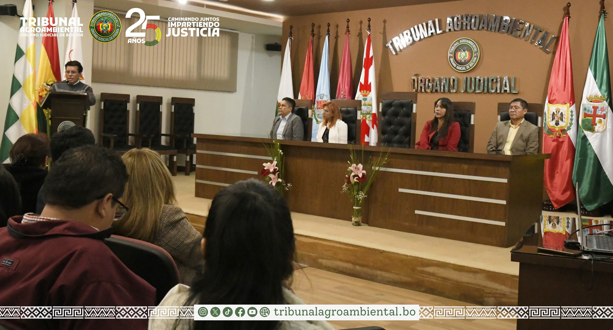
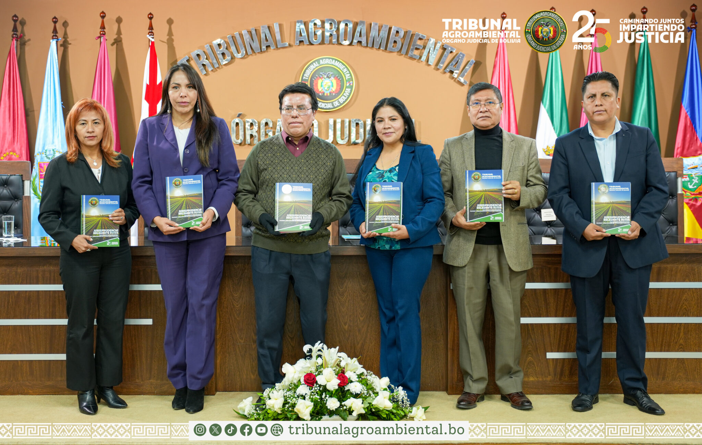
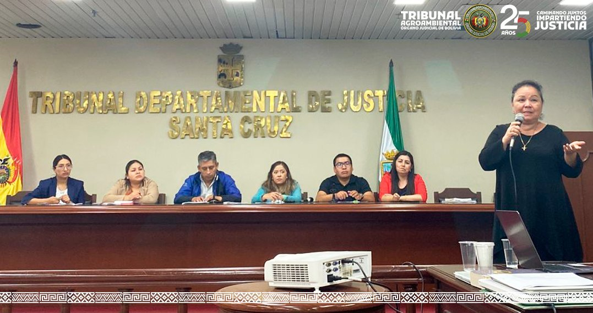

𝐏𝐑𝐄𝐒𝐈𝐃𝐄𝐍𝐓𝐄 𝐃𝐄𝐋 𝐓𝐑𝐈𝐁𝐔𝐍𝐀𝐋 𝐀𝐆𝐑𝐎𝐀𝐌𝐁𝐈𝐄𝐍𝐓𝐀𝐋 𝐃𝐄𝐒𝐓𝐀𝐂𝐀 𝐄𝐋 𝐓𝐑𝐀𝐁𝐀𝐉𝐎 𝐃𝐄 𝐋𝐎𝐒 𝐉𝐔𝐄𝐂𝐄𝐒 𝐀𝐆𝐑𝐎𝐀𝐌𝐁𝐈𝐄𝐍𝐓𝐀𝐋𝐄𝐒 𝐘 𝐄𝐗𝐇𝐎𝐑𝐓𝐀 𝐏𝐑𝐎𝐅𝐔𝐍𝐃𝐈𝐙𝐀𝐑 𝐋𝐀 𝐂𝐔𝐋𝐓𝐔𝐑𝐀 𝐃𝐄 𝐏𝐀𝐙
El Presidente del Tribunal Agroambiental, Magistrado Gregorio Aro Rasguido, al conmemorarse el Día del Juez Boliviano, destaca el trabajo de las juezas y jueces de la Jurisdicción Agroambiental y los exhorta a profundizar la cultura de paz mediante la conciliación.
LEER MÁS »
EL TRIBUNAL AGROAMBIENTAL, RECIBIÓ MIL EJEMPLARES DEL LIBRO DE JURISPRUDENCIA RELEVANTE” CORRESPONDIENTE A LOS PROCESOS: CONTENCIOSO ADMINISTRATIVOS Y NULIDAD Y ANULABILIDAD DE TÍTULOS EJECUTORIALES DE LA GESTIÓN 2023
El Tribunal Agroambiental, recibió mil ejemplares del libro de Jurisprudencia Relevante” correspondiente a los procesos: Contencioso Administrativos y Nulidad y Anulabilidad de Títulos Ejecutoriales de la gestión 2023, documento que fue editado por la Unidad de Jurisprudencia de este Máximo Tribunal Especializado de la Jurisdicción Agroambiental e impreso por el Consejo de la Magistratura, mediante la Gaceta Judicial.
LEER MÁS »
JURISDICCIÓN AGROAMBIENTAL RECIBIÓ CAPACITACIÓN SOBRE PROCESOS EJECUTIVOS Y COACTIVOS EN MATERIA AGROAMBIENTAL
Magistrados, jueces y personal de apoyo de la Jurisdicción Agroambiental, recibieron capacitación sobre ” Procesos Ejecutivos y Coactivos en Materia Agroambiental “, actividad académica que fue organizado por el Tribunal Agroambiental (TA) y la Escuela de Jueces del Estado (EJE) del Órgano Judicial, en el marco del programa de capacitación que fue programado para la presente gestión.
LEER MÁS »JURISDICCIÓN AGROAMBIENTAL CUENTA CON 113 DEFENSORES DE OFICIO A NIVEL NACIONAL
En el marco de la transparencia institucional y tras la culminación del proceso de preselección y selección conforme a lo establecido en la convocatoria N° 001/2024 para Defensores de Oficio y haberse desarrollado con éxito el curso de inducción por la Escuela de Jueces del Estado (EJE), el Tribunal Agroambiental, posesionó a 113 abogadas y abogados como Defensores de Oficio para la Jurisdicción Agroambiental.
LEER MÁS »